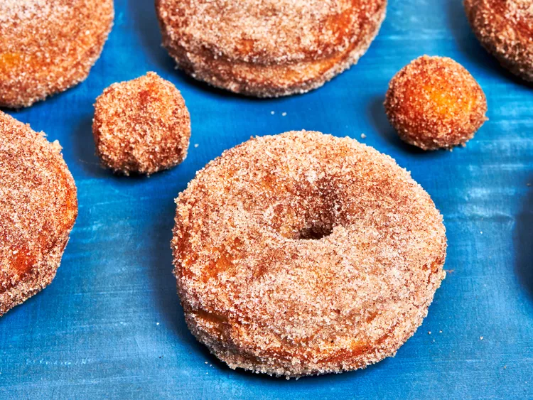

Easy Churro Cronuts
Home

Description
These easy churro donuts are deep fried crescent roll donuts with a cinnamon sugar
topping. Made with convenient refrigerated crescent roll dough, it's easy to
satisfy a craving without going to the bakery.
Ingredients
- 2 (8 ounce) cans refrigerated crescent dough sheets
- 4 cups oil, or as needed, for frying
- 1 cup white sugar
- 2 teaspoons ground cinnamon
- chocolate sauce or chocolate hazel spread for serving
Directions
- Remove dough from each can and unroll to a rectangular shape. Fold the shorter
end of 1 sheet up 1/3 of the way. Fold the opposite edge 1/2 of the way to fold
over (and cover) the first fold. The dough should have 3 layers. Use a 3-inch
cutter to cut 3 circles from the dough. Form the scraps into another layered
piece and cut out one more circle. Repeat with the remaining dough sheet. Use
a smaller cutter to cut the center out of each circle to form a donut shape and
reserve for donut holes.
- Fill a large saucepan halfway with oil and place over medium-high heat to reach
a temperature of 350 to 365 degrees F (175 to 183 degrees C). Line a tray with
paper towels.
- Combine sugar and cinnamon in a shallow dish; set aside.
- Working with 2 to 3 cronuts at a time, carefully lower each cronut into the hot
oil. Fry about 1 minute, rotating occasionally, until browned evenly. Drain briefly
on the prepared tray. While donuts are still hot, coat evenly in cinnamon sugar.
Repeat with the remaining cronuts and donut holes.
- Serve with chocolate sauce or hazelnut spreading for dipping.